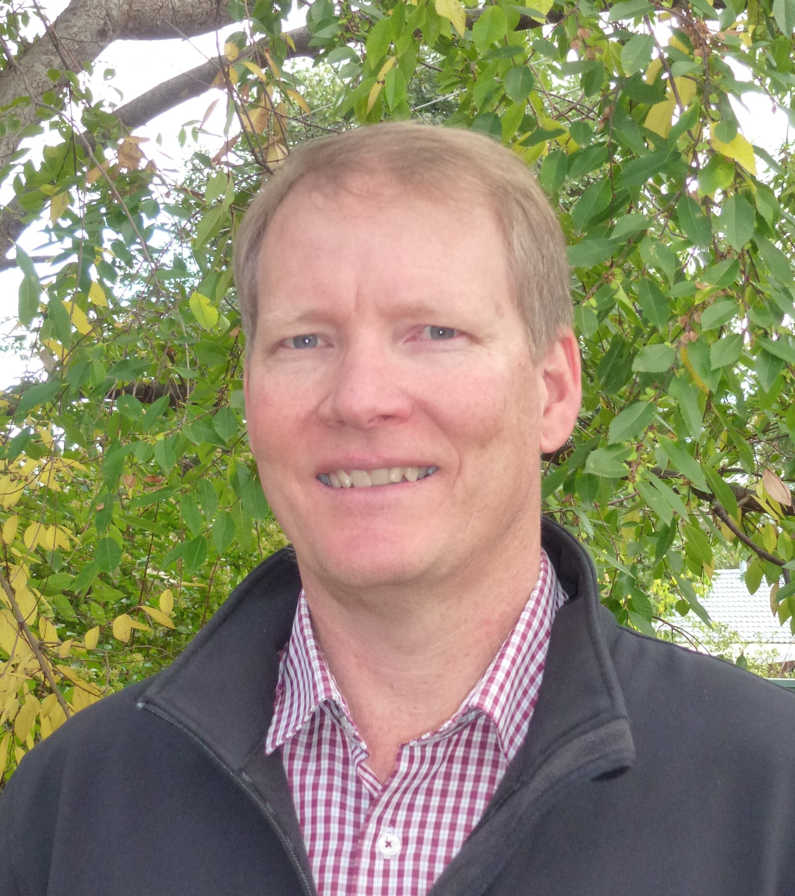

Dr. John Kirkegaard
Chief Research Scientist, CSIRO — Australia's National Science Agency
Fulbright Distinguished Chair, Kansas State University
How do we design farming systems that produce more with less — and share that knowledge across borders?
John Kirkegaard is a Fellow of the Australian Academy of Science whose research focuses on how cropping system design — sequences, timing, and variety choices — can improve water use efficiency in dryland agriculture. He received the Eureka Prize in Sustainable Agriculture in 2014. He is currently a Fulbright Distinguished Chair at Kansas State University, bringing an international perspective to wheat system productivity.
To be announced
Abstract will be announced soon.